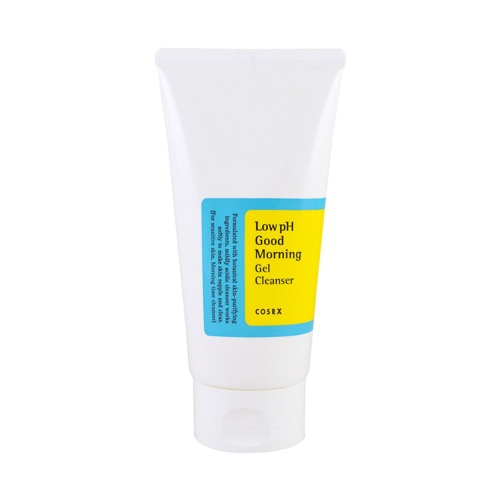
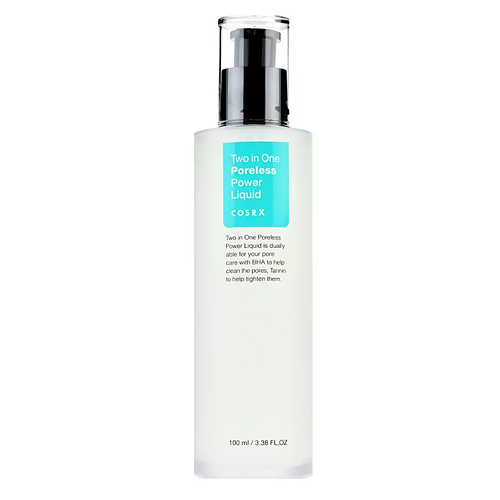
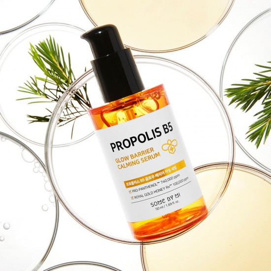

COSRX Low pH Good Morning Gel Cleanser is ideal for cleansing facial skin in the morning: it perfectly removes excess sebum and dead skin cells, leaving you feeling clean, hydrated and comfortable all day long. Cleans gently, does not provoke dehydration, flaking, irritation, feeling of tightness.

COSRX Two In One Poreless Power Liquid essence with salicylic acid, natural extracts of white willow bark and peppermint. The product effectively cleanses and tightens pores, evens out skin relief, controls skin production and gives a very pleasant and comfortable cooling effect. The product is excellent for combination, oily and problem skin with enlarged pores

Some By Mi Propolis B5 Glow Barrier Calming Serum has powerful anti-inflammatory, antibacterial and antioxidant properties. Visibly evens out skin tone and fills with a healthy, even radiance. Increases the firmness and elasticity of the skin, helps to retain moisture and nourishes.
